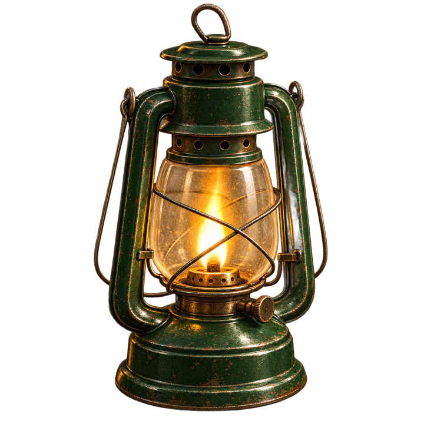
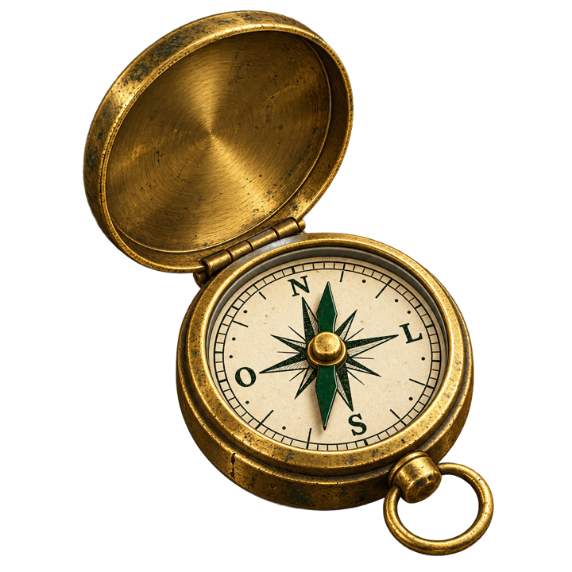
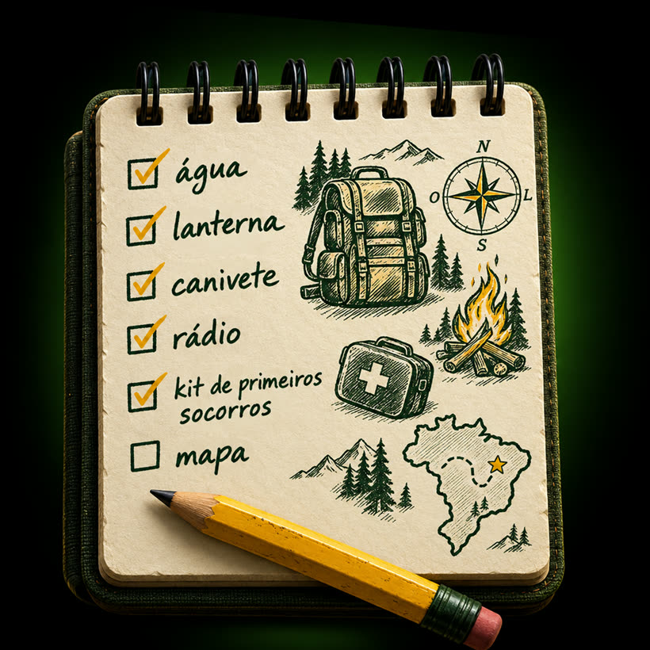
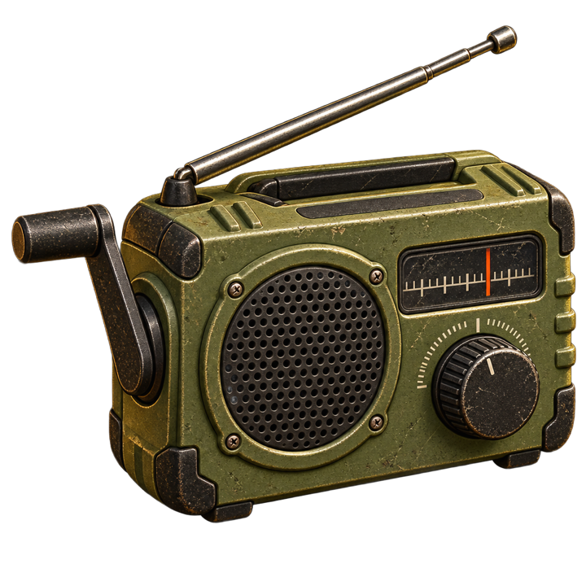
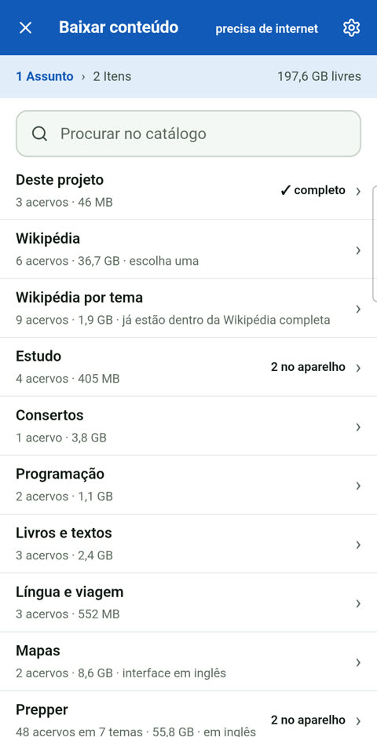
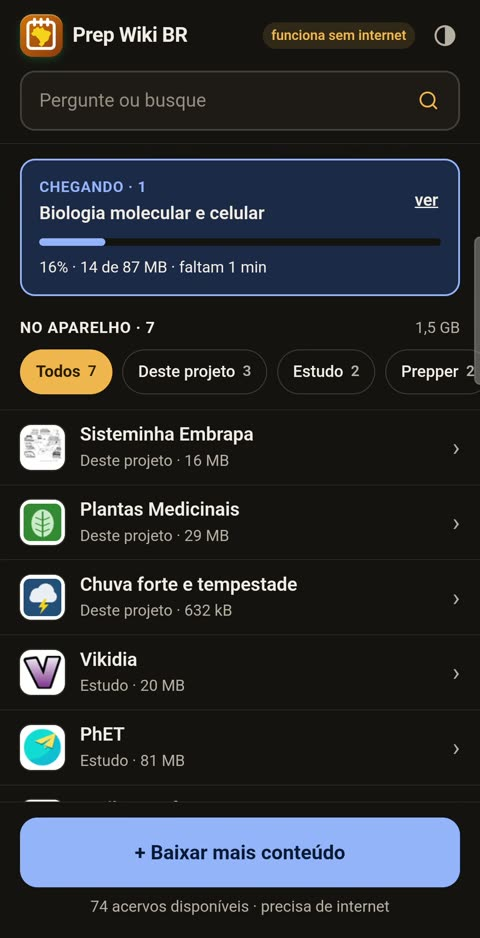
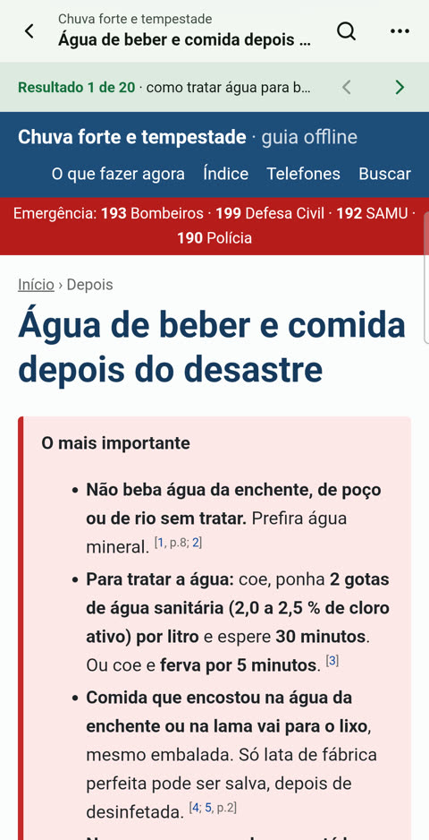

Guia · Embrapa · 16 MB
Sisteminha: comida no quintal
Tanque de peixes com biofiltro, aves, horta e compostagem. Com as 52 perguntas e respostas da Embrapa e uma calculadora de ração.
Biblioteca offline em português
81 acervos guardados no seu aparelho: três guias que só existem aqui, a Wikipédia, manuais de conserto e PDFs e vídeos traduzidos, com busca em português. Sem sinal, sem conta, sem anúncio.

81 acervos em 10 assuntos
3 guias exclusivos
PDFs e vídeos traduzidos

Role para ver os guias
Guia · Embrapa · 16 MB
Tanque de peixes com biofiltro, aves, horta e compostagem. Com as 52 perguntas e respostas da Embrapa e uma calculadora de ração.
Guia · Anvisa · 29 MB
Fórmula, preparo, dose, advertências e foto de cada planta do Formulário de Fitoterápicos, mais cultivo e uso seguro no SUS.
Guia · 36 páginas
O que fazer antes, durante e depois de enchente, deslizamento, vendaval e raio. Cada orientação traz a fonte.
Escritos a partir de publicações oficiais. Os três somam 46 MB e também abrem em qualquer Kiwix. O Sisteminha e as Plantas Medicinais estão na demonstração.
Busca por sentido
A busca procura pelo sentido: acha “como tratar água” numa página que fala em purificação, e pergunta em português acha texto em inglês.
O leitor é do próprio app: tem zoom, salto de página e lembra onde você parou.
Os canais de vídeo ganham legenda em português, feita por máquina a partir do áudio.
A tradução roda no aparelho, com um pacote de 42 MB. Nenhum texto sai dele, e o original fica a um toque.
Lista escolhida
Você instala só o que quiser. Cada acervo tem descrição em português e mostra o tamanho antes de baixar.
Sisteminha Embrapa, Plantas Medicinais, Chuva forte e tempestade
Completa ou só os 50 mil melhores artigos. Cada uma com imagens, sem imagens ou resumida
Medicina, Química, Física, Matemática, Biologia molecular e celular, História, Geografia, Computação
Vikidia, Wikilivros, Wikiversidade e as simulações de ciências do PhET
iFixit, com guias de conserto passo a passo
Stack Overflow em Português e freeCodeCamp
Wikisource, Projeto Gutenberg e Wikiquote
Wikcionário, Portuguese Language Q&A e Wikivoyage
Brasil e América do Sul, com estradas e pontos de referência
Sobrevivência, água e comida, saúde, energia, consertos e vídeos. Abrem em português com o pacote de tradução

Um conjunto enxuto em português (os três guias, a Wikipédia dos 50 mil melhores artigos, Medicina, iFixit, Estudo e Língua e viagem) fica em torno de 8 GB.
Entre as fontes
Privacidade
O que você busca e lê fica no aparelho. A busca e a tradução rodam nele mesmo, e a internet só entra para baixar os acervos que você escolher.

Como começar

Marque o que interessa na lista. O app soma o tamanho e mostra quanto espaço sobra.

O download continua com a tela apagada e mostra o progresso na notificação.

Cada acervo abre como um site, com busca própria, tema claro ou escuro e leitor de PDF.
Só para baixar. Depois de baixado, cada acervo abre, busca e traduz sem conexão.
Dá. A demonstração ao vivo abre no navegador com 7 acervos de exemplo, sem instalar nada.
Você decide. Os três guias do projeto somam 46 MB, e um conjunto enxuto em português fica em torno de 8 GB. O tamanho de cada acervo aparece antes de baixar.
No celular, em Android 10 ou mais novo, de 64 bits. No computador, em Windows e Linux. Pelo Docker, roda num PC ou num Raspberry Pi 4 ou 5 e serve a casa toda pelo navegador.
É feita por máquina, dentro do aparelho, e serve para entender o texto. Em doses, medidas e números, confira o original, que fica a um toque.
É. Não tem anúncio, cadastro nem versão paga. Quem quiser pode apoiar o projeto; o apoio não libera nada.
De fontes abertas, como a Wikipédia e o Kiwix, e de publicações da Embrapa e da Anvisa. Os acervos de saúde são educativos e não substituem um profissional de saúde.
Projeto livre
Gratuito, de código aberto e sem anúncios. O seu apoio paga o tempo de manter o catálogo, escrever novas wikis em português e cuidar dos apps.
sem taxa
Você escolhe o valor. Copie o código e cole no app do seu banco, em Pix Copia e Cola.
cartão · qualquer país
Para apoiar com PayPal ou cartão, de fora do Brasil, ou com um valor todo mês.
Doar pelo Liberapaypelo app · Google Play
Dentro do app, o apoio é uma compra avulsa pela loja. Não libera nada: o app é o mesmo para todo mundo.
Sem gastar nada também ajuda: indique para quem pode precisar, ou relate um problema ou sugira um acervo no GitHub do projeto.
Grátis, sem cadastro e sem anúncio. Para Android, Windows, Linux e Docker.